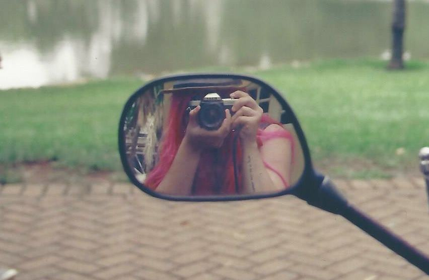
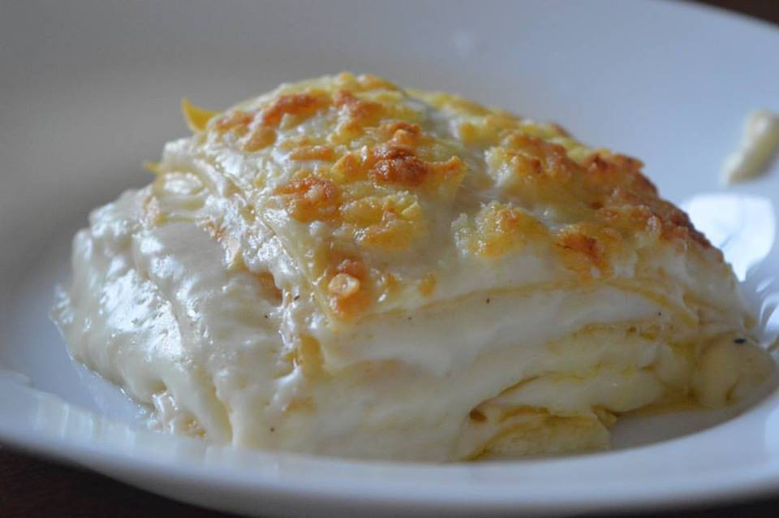
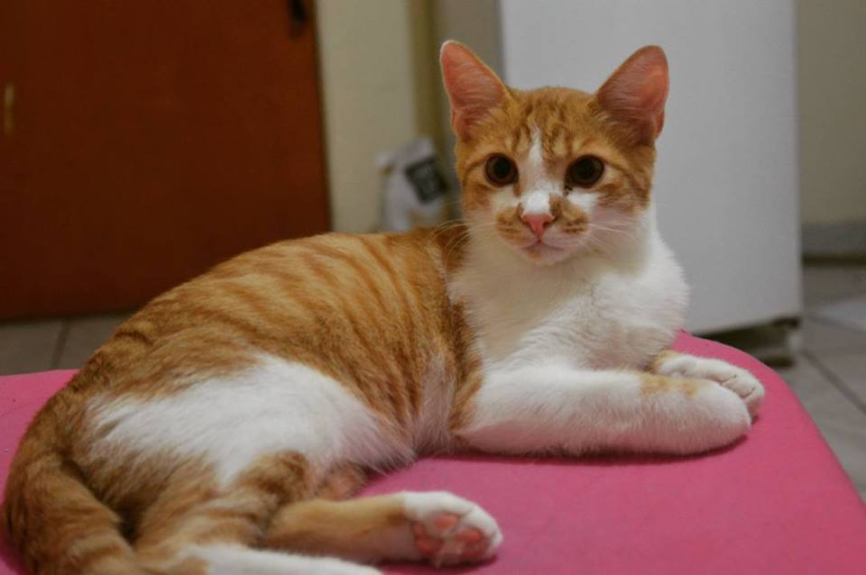
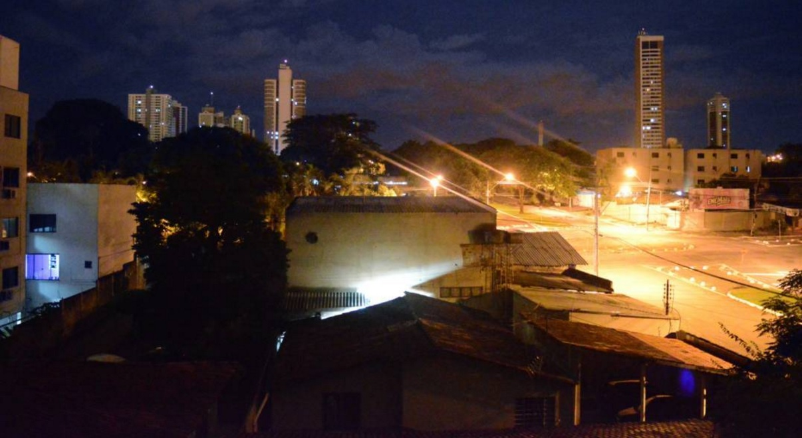
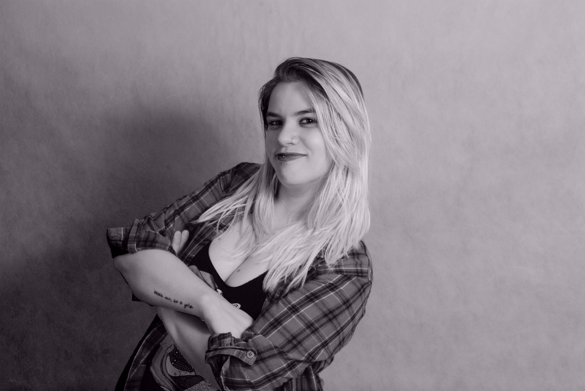
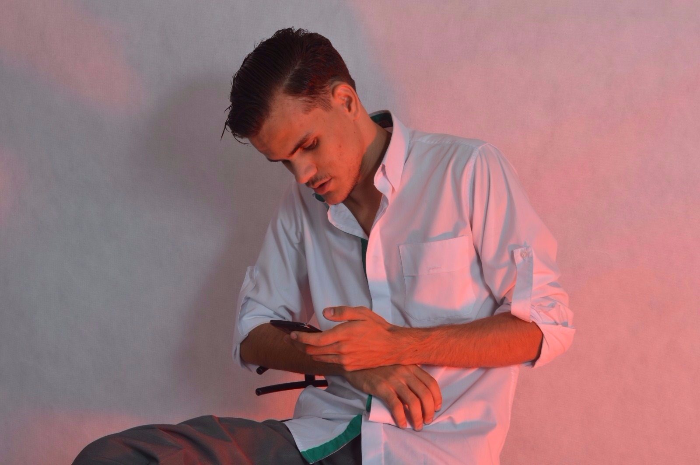
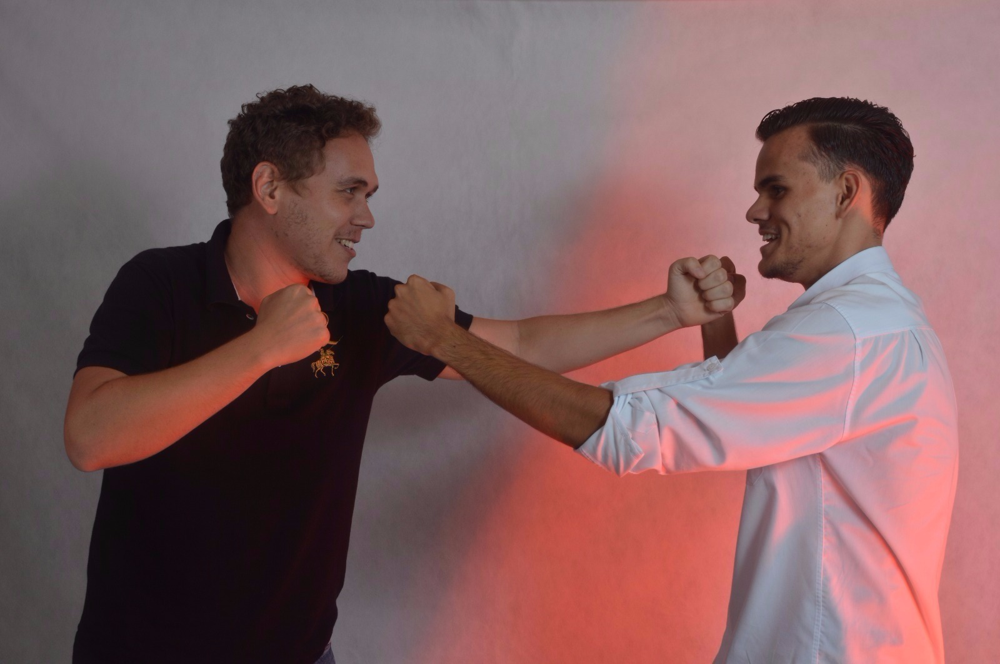
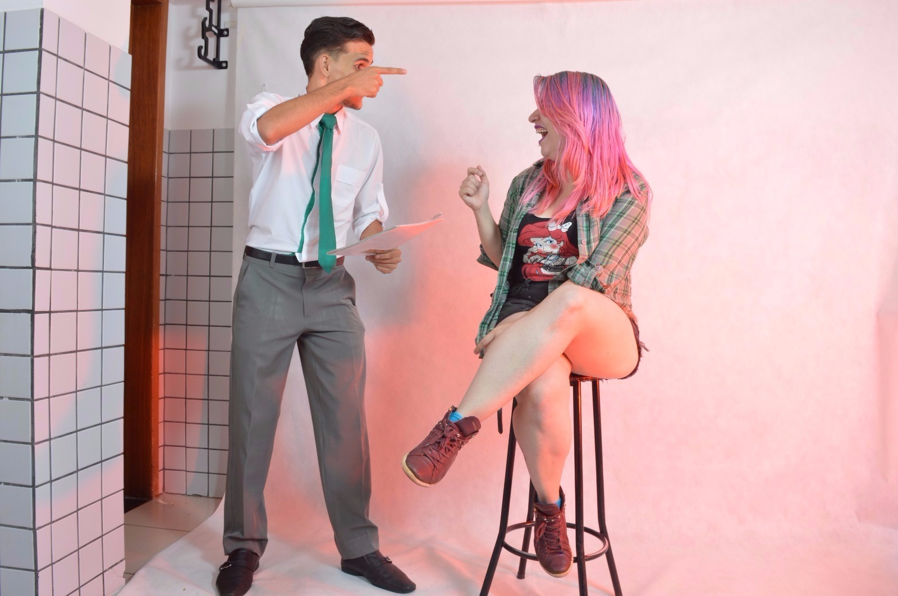
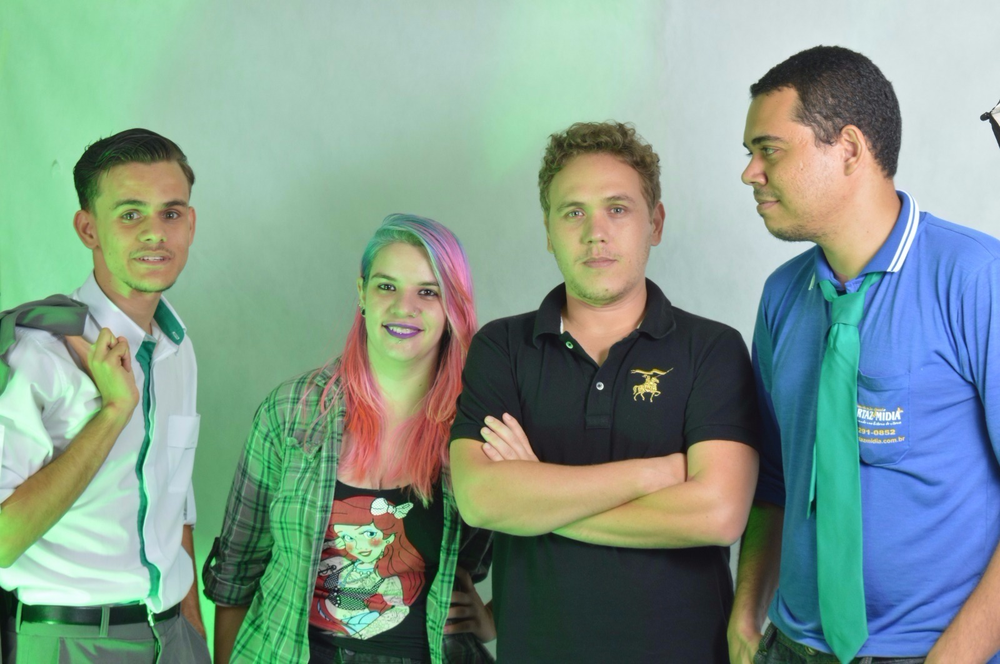

Introdução
Carga Horária: 66 horas / 80 Aulas
Professor: Gésion Carvalho
EMENTA
Compreender a imagem como elemento significativo e determinante da comunicação contemporânea,
pelo seu caráter de recepção instantâneo. Perceber a fotografia como ferramenta indispensável na
construção de imagens, seja para elaboração de mensagens em peças gráficas e/ou virtuais, seja como
mero instrumento de registro. A disciplina deve fomentar debate sobre as formas de circulação de
imagens na sociedade utilizando os princípios da semiótica, e promover o estudo dos componentes
estéticos e simbólicos da imagem, assim como o caráter ético do profissional da área.
OBJETIVOS
Desenvolver competência profissional para produzir, criticar ou administrar produção fotográfica para
fins de aplicação no Design Gráfico, com postura profissional e ética.
#01 - Camera Analógia
Aula em Campo realizada no Parque Flamboyant com uso de Cameras Analogicas para estudo
#02 - Práticas em Casa
Práticas realizadas em casa, com a utilizaçao da camera comprada pras aulas.
  #03 - Aula em Estúdio
Aula realizada em estúdio da faculdade, com intençao de aprender e testar os elementos da fotografia e praticar.
    